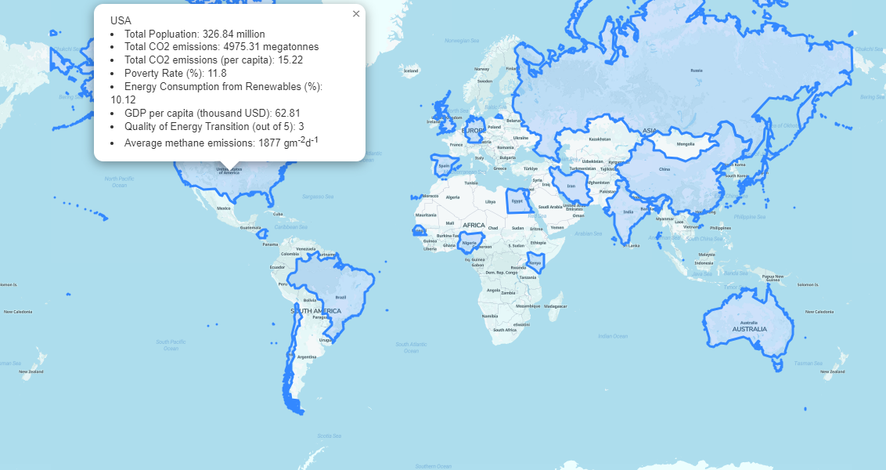
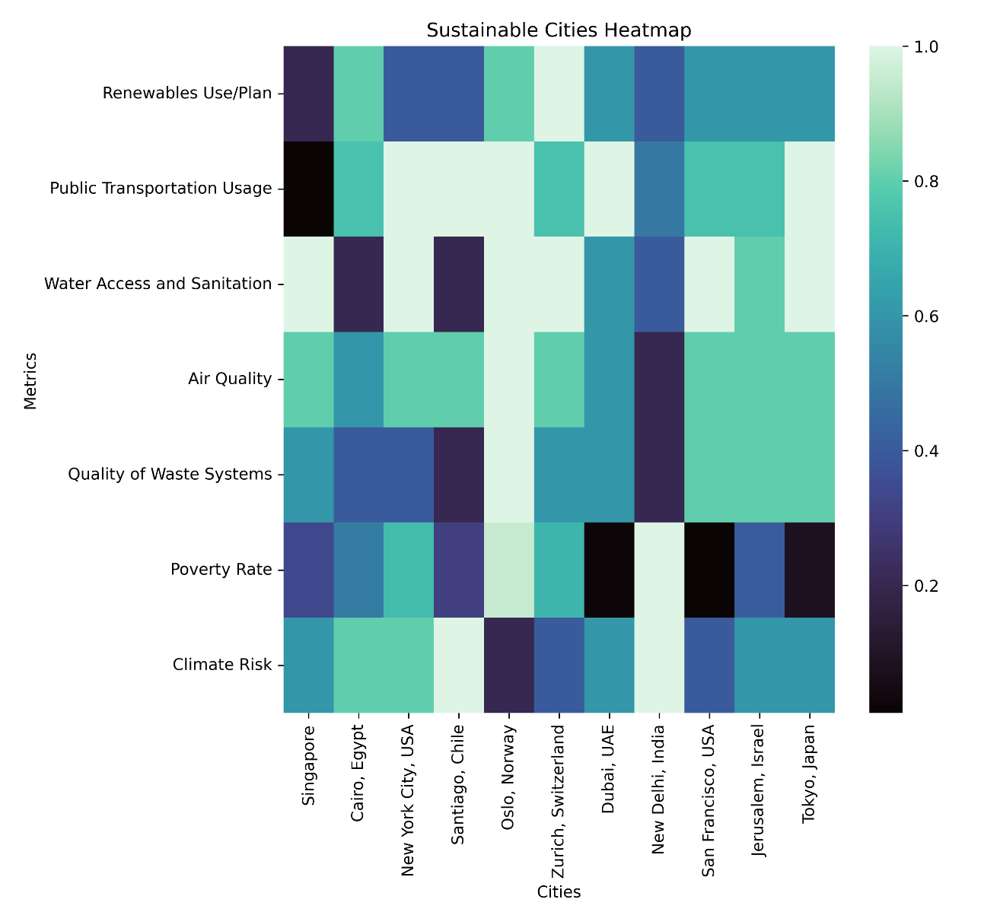
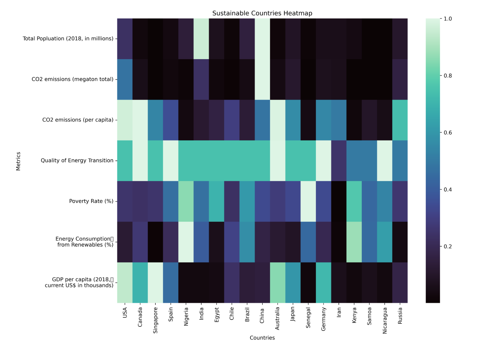
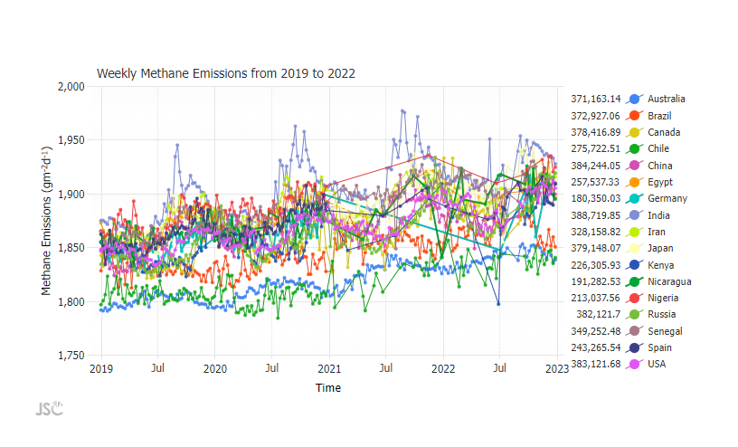

Project Lead: Jacqueline Buford, Emily Teh
Past Contributions: Sanjana Jain, Vaarun Muthappan, Noah Young, Kate Conkright, Jett Li, Maitri Shah, John Micallef, Maitri Shah
Motivation:
Explore sustainability measures and practices in various places around the world, share findings to track sustainability progress of each location, create a centralized place to compare sustainability practices.
Methods:
First we researched sustainability goals and practices from around the world and gathered 2018 statistics. Then, we created heatmaps using Python, and the matplotlib library using quantitative data and self-assessed scaled. Next, we created a leaflet map using the Javascript library, Leaflet and quantitative, qualitative and geoJSON data. Finally, we compiled all of this in a website using HTML, CSS, and Javascript, which we were able to publish on Github Pages. Then, we worked on using APIs, and updated our map with real time emmisions data using Javascript, allowing us to create a line graph of countries' emissions over time.
Findings:
We found that it is very difficult to find emissions data due to the issues with monitoring it.
Data Visualizations:
   